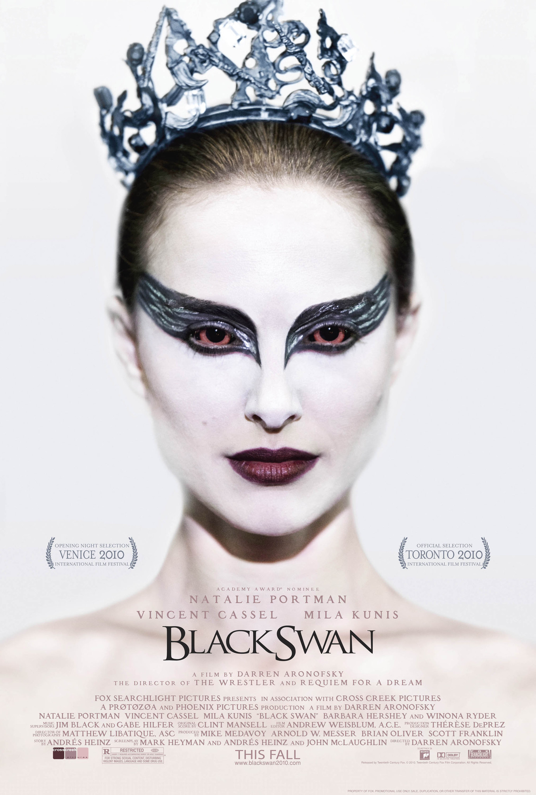

Nina Sayers is a young woman who lives with her overprotective mother, Erica, a former dancer; and dances with a New York City ballet company. The company is opening the season with Tchaikovsky's Swan Lake. After forcing prima ballerina Beth MacIntyre into retirement, artistic director Thomas Leroy announces he is looking for a new dancer for the dual roles of the innocent and fragile White Swan Odette and the sensual and dark Black Swan Odile. Nina auditions for the roles and gives a flawless rehearsal as Odette, but fails to embody Odile.
The following day, Nina asks Thomas to reconsider her role. When he forcibly kisses her, she bites him and runs out of his office. Later that day, Nina sees the cast list and discovers to her surprise she has received the lead roles. At a gala celebrating the new season, an intoxicated Beth accuses her of sleeping with Thomas for a promotion. The following day, Nina hears Beth was hit by a car. Thomas believes Beth was attempting to commit suicide. Nina visits an unconscious Beth in the hospital, and sees that her legs have been seriously injured, meaning that she will not be able to perform as a ballet dancer again.
During rehearsals, Thomas tells Nina to observe a newcomer, Lily, who has a physical resemblance to Nina but also an uninhibited quality Nina lacks. Nina hallucinates a sinister doppelgänger of herself more and more frequently and finds scratch marks on her back.